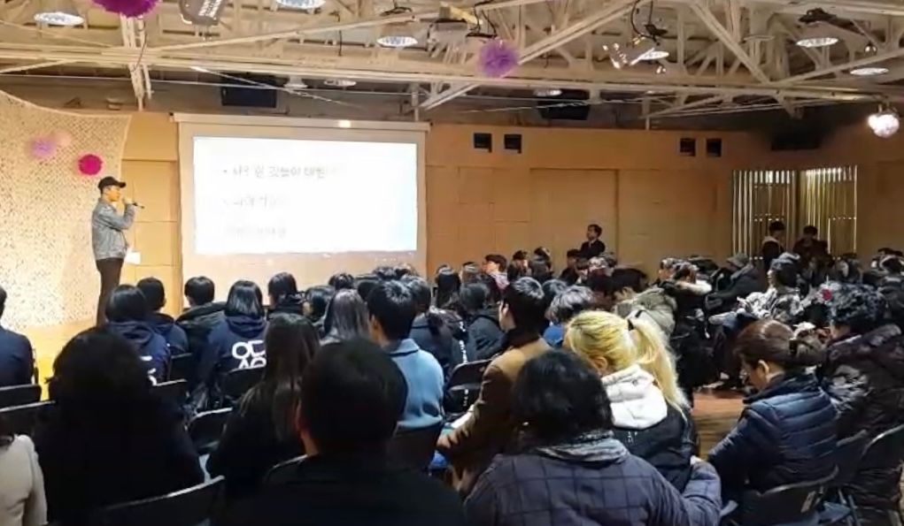

열일곱 살이 되기 전까지 저에게는 뚜렷한 목표도, 비전도, 야망도 없었습니다. 그저 하루하루를 흘려보내며, 대부분의 시간을 노는 데 쓰고 삶에 대해 깊이 생각하지 않았습니다.
모든 게 달라진 건 2017년, 제가 열일곱 살이 되던 해였습니다. 어른이 된다는 것에 대한 압박감을 느끼기 시작했습니다. 친구들은 어느 고등학교, 어느 대학에 가고 싶은지 진지하게 이야기하기 시작했는데, 저는 제가 뭘 원하는지조차 몰랐습니다. 솔직히 그런 건 생각하고 싶지도 않았습니다. 그저 계속 놀고 스트레스를 피하고 싶었습니다. 그 무렵 아버지가 덴마크식 교육 철학을 따르는 1년제 대안학교를 추천하셨습니다. 뚜렷한 목표가 있어서가 아니라, 그저 모든 것으로부터 도망치고 싶어서 그 학교에 가기로 했습니다.
그 학교는 시험 위주의 일반적인 시스템과는 완전히 달랐습니다. 학생들은 하루에 딱 세 개의 수업만 들었습니다. 강의를 듣고 필기를 하는 대신, 대부분의 수업은 우리가 스스로 깊이 생각하도록 설계되어 있었습니다. 처음엔 즐겁지 않았습니다. 하지만 시간이 지나며 배움 그 자체와, 제가 발견한 것들로 제 삶을 스스로 빚어가는 과정을 사랑하게 됐습니다. 마침내 제가 누구인지, 진짜로 무엇을 원하는지 돌아볼 여유가 생겼습니다. 감정에 휩쓸리지 않고 공동체와 소통하는 법도 배웠습니다. 그렇게 조금씩, 제 선택에 대한 더 단단한 정체성과 주인의식을 쌓아갔습니다.
1년이 끝나고 저는 다시 일반 고등학교로 돌아갔습니다. 처음엔 친구들과 다시 만난 게 즐거웠습니다. 하지만 곧 숨이 막히기 시작했습니다. 대부분의 수업은 오직 시험 준비만을 위한 것이었고, 진짜 질문이나 학생과 교사 사이의 의미 있는 대화가 들어설 자리는 없었습니다. 친구들은 오직 좋은 성적과 명문대 진학만을 신경 썼지만, 저는 더 깊이 들어가고 싶었습니다. 저는 그 시스템 자체를 바꾸고 싶었습니다.
많은 고민 끝에, 2018년 5월 저는 고등학교를 그만두고 작가가 되겠다는 꿈을 좇기로 했습니다. 다른 사람들에게 영감을 주고, 제 경험에서 얻은 새로운 관점을 나누고 싶었습니다. 제가 살아내고 배운 것들이 다른 사람들의 여정에도 길잡이가 될 수 있기를 바랐습니다. 교과서가 줄 수 있는 것 너머, 여러 분야를 넘나드는 지식을 탐구하고 싶기도 했습니다.

운 좋게도 저는 제 첫 집필 수업에서 좋은 멘토를 만났습니다. 함께한 참가자 대부분이 마흔이 넘은 나이였고, 저는 겨우 열여덟 살이었습니다. 경험은 많지 않았지만, 글을 쓰는 뚜렷한 목적과 세상에 긍정적인 영향을 주고 싶다는 진심을 가지고 그 자리에 들어갔습니다. 멘토님은 제 안의 그 열정을 알아봐 주셨고, 그분의 도움으로 저는 책 3권을 세상에 내놓을 수 있었습니다.
한 독자분이 제게 해주신 말이 있습니다. "제 삶에 나타나 주셔서 감사해요." 그 말은 지금까지 누군가에게 들은 말 중 가장 마음을 울린 말이었습니다. 그 순간, 책의 진짜 가치는 사람들에게 행복을 전하는 데 있다는 걸 깨달았습니다. 그 뒤로 저는 사람들을 행복으로 이끄는 책을 쓰는 일에 제 자신을 바쳐왔습니다.
학교를 나오기로 결심했을 때 찾아온 압박감은 제가 예상했던 것보다 훨씬 컸습니다. 그 시기 저는 공황장애를 겪었고, 한때는 모든 걸 놓아버리고 싶다는 생각까지 들 만큼 힘든 순간도 있었습니다. 그 후 3년, 약 없이 꾸준한 노력과 자기돌봄을 통해 스스로 회복했습니다.
그 과정에서 공황장애를 제대로 이해하지 못해 필요 이상으로 고통받는 사람들이 정말 많다는 걸 알게 됐습니다. 그래서 지금 쓰고 있는 다음 책은, 그런 분들을 위한 실질적인 도구와 명확한 안내로 채우고 있습니다.
지금까지 제 모든 활동은 한국 안에 뿌리를 두고 있었습니다. 이제는 영어권을 시작으로, 더 넓은 세상의 독자들에게 닿으려 합니다.